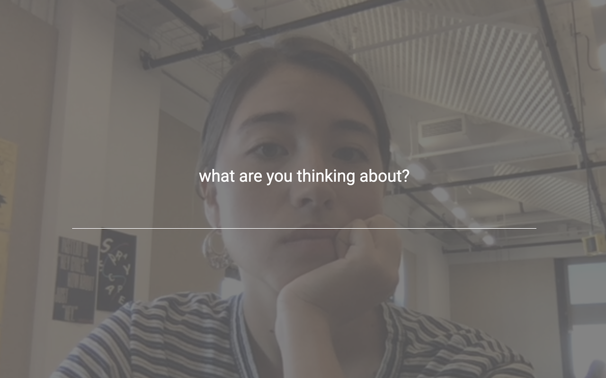
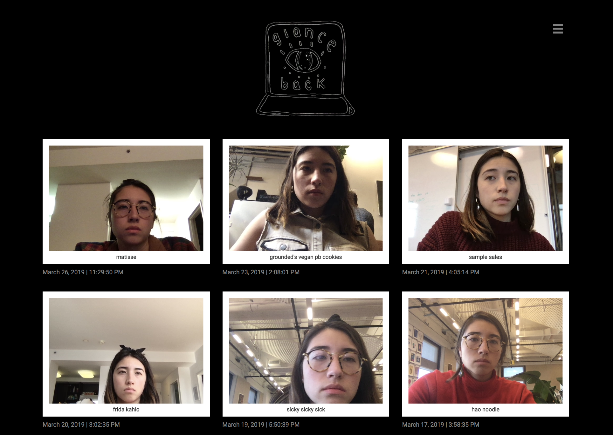
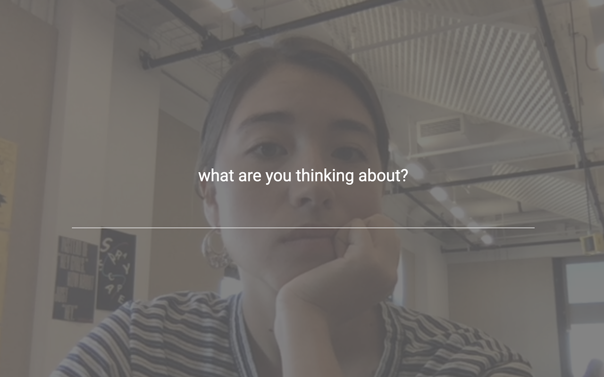
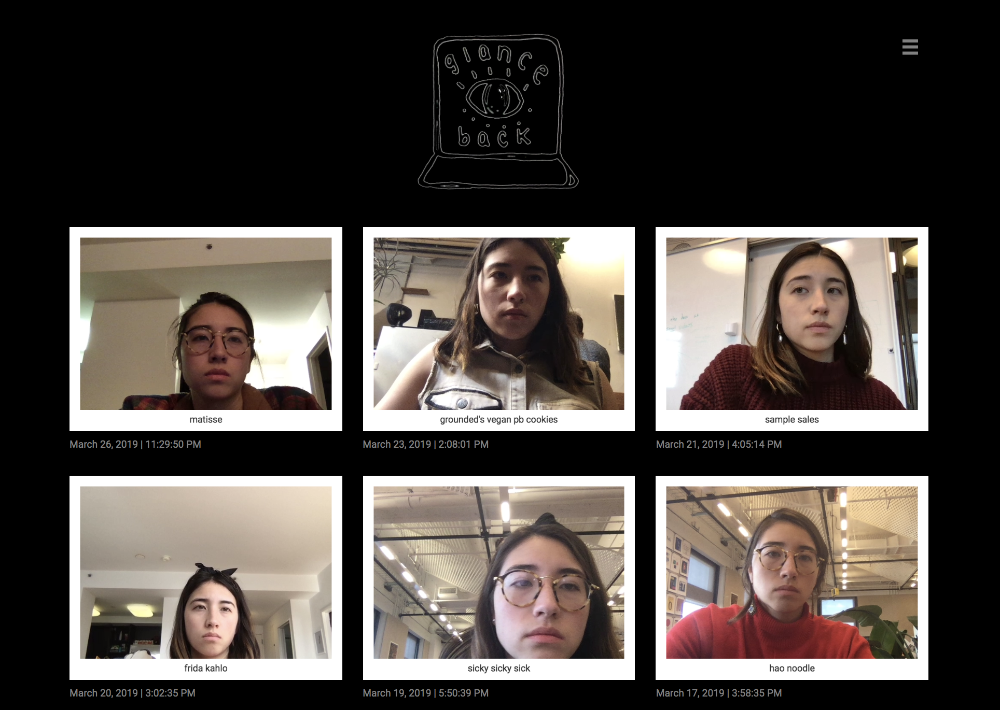

Glance Back
glanceback.info
Glance Back is a chrome extension that acts as a daily photo diary, capturing the moments shared between you and your computer. Once a day, when you open a new tab, Glance Back will unexpectedly take your photo, ask you what you’re thinking about, and save both the photo and written thought to its locally stored archive.
You spend so much time staring at your computer...
Doesn't your computer deserve a chance to glance back at you?
Read more about the project and get the extension here.